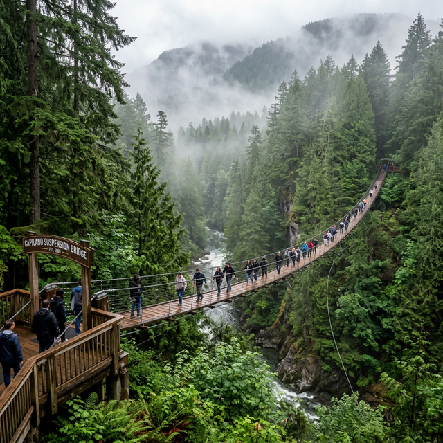
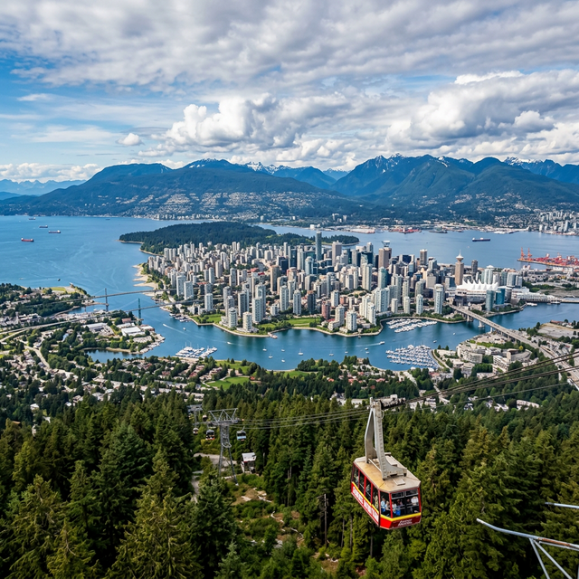
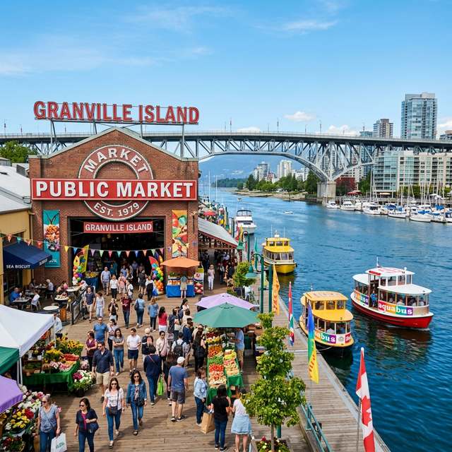
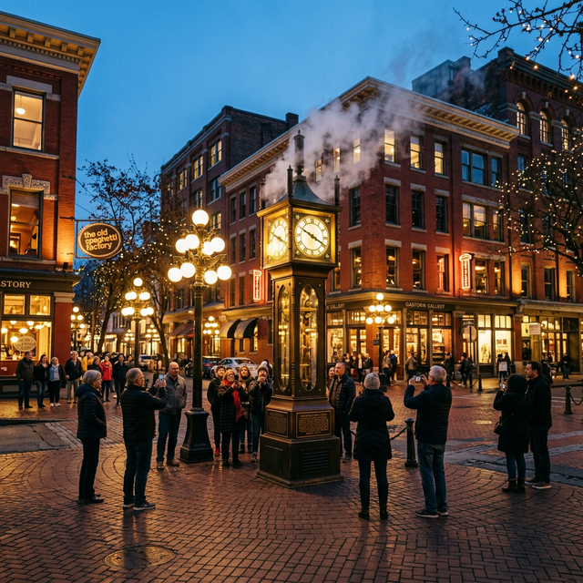
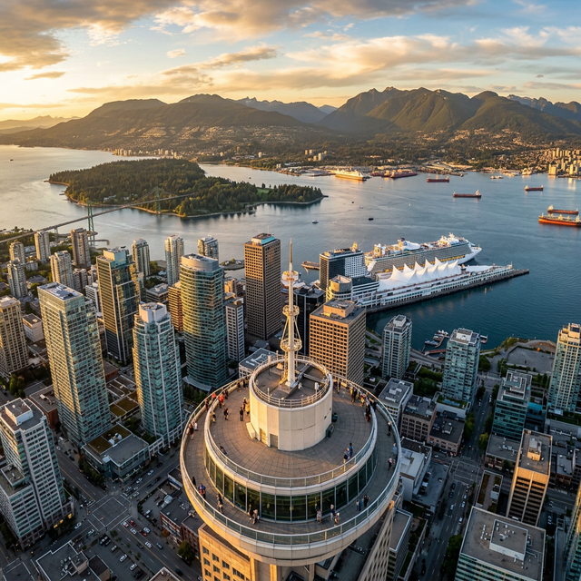
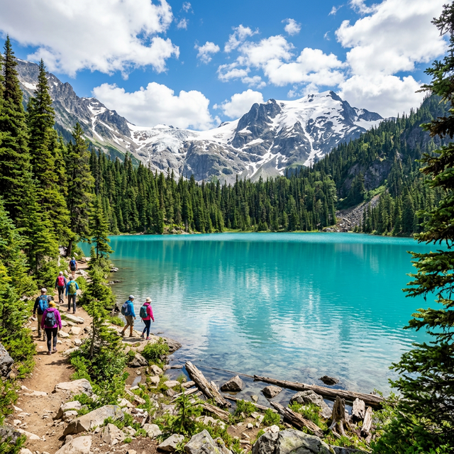
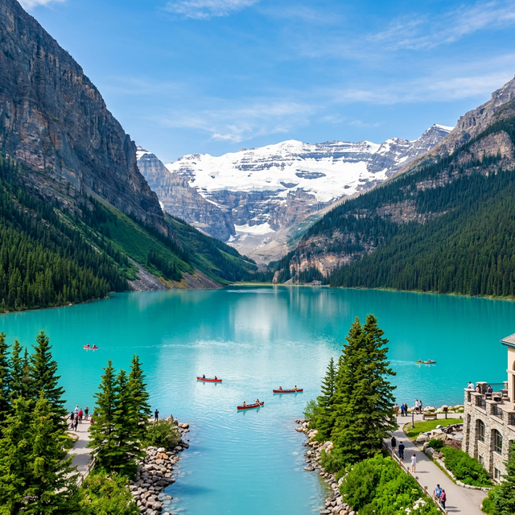

Vancouver Travel Guide
Where mountains meet the Pacific — a complete guide to the most livable city in the world, including top attractions, guided tours, entry requirements, and practical tips
July Weather in Vancouver
Warm, sunny, and dry — the best month to visit Vancouver
☀️ What to Expect
July is Vancouver's warmest and driest month — the perfect time to explore! Expect sunny skies with temperatures between 14–24°C. Long daylight hours (sunrise ~5:15am, sunset ~9:20pm) give you plenty of time to explore. The ocean warms up enough for brave swimmers, and the mountains are fully snow-free for hiking. Pack sunscreen, sunglasses, and a light jacket for cooler evenings.
Top Attractions
The most iconic places in Vancouver, BC & the Canadian Rockies

Stanley Park
A 1,000-acre urban oasis on a peninsula surrounded by the Pacific Ocean. The 9km Seawall is one of the world's longest uninterrupted waterfront paths — perfect for walking, jogging, or biking with stunning views of the harbor, downtown skyline, and North Shore mountains.
Home to the Vancouver Aquarium, centuries-old totem poles at Brockton Point, Prospect Point lookout, and pristine beaches including Third Beach and Second Beach. Over 8 million visitors annually.

Capilano Suspension Bridge Park
Walk 137 meters across a swaying suspension bridge, 70 meters above the Capilano River and ancient rainforest. Built in 1889, this is one of Vancouver's oldest and most thrilling attractions. The park includes the Treetops Adventure (7 bridges through Douglas fir canopy) and Cliffwalk (a cantilevered walkway along the granite cliff face).

Grouse Mountain — The Peak of Vancouver
Called "The Peak of Vancouver," Grouse Mountain offers the most spectacular panoramic view of the entire city, ocean, and surrounding mountains from 1,231m elevation. Take the SkyTram gondola for a breathtaking 8-minute ride above the treetops.
Year-round activities include the Grouse Grind hiking trail (2.9km of steep switchbacks known as "Mother Nature's StairMaster"), wildlife refuge with grizzly bears, ziplines, and skiing in winter. The mountain biking park opened in 2025.

Granville Island
A vibrant cultural peninsula on False Creek, famous for the Granville Island Public Market — one of North America's top food markets. Browse 50+ permanent vendors offering fresh BC salmon, artisan cheeses, handmade chocolates, and local produce.
Beyond the market, explore art studios, theater venues, craft breweries, and the colorful Aquabus ferry boats. A former industrial area transformed into Vancouver's creative heart since the 1970s.

Gastown & The Steam Clock
Vancouver's oldest neighborhood, founded in 1867, features charming cobblestone streets, Victorian architecture, and the iconic Gastown Steam Clock — one of only a few steam-powered clocks in the world. It chimes and releases steam every 15 minutes, drawing crowds around the clock.
The area is packed with upscale boutiques, indie galleries, rooftop cocktail bars, and some of Vancouver's best restaurants. Water Street is the main artery — walk east to see the Gassy Jack statue, honoring the district's founder.

Vancouver Lookout at Harbour Centre
Ride a glass elevator 168.6 meters up to the observation deck for a stunning 360-degree panoramic view of the entire city. See the cruise ships at Canada Place, Stanley Park, the North Shore mountains, and on clear days, Mount Baker in Washington State, USA.
Your ticket is valid all day — come for the daytime cityscape and return for sunset and the sparkling night skyline. It's the fastest way to orient yourself in Vancouver.

Joffre Lakes Provincial Park
Three jaw-dropping turquoise-blue, glacier-fed lakes nestled in the Coast Mountains, about 2.5 hours east of Vancouver along the Sea-to-Sky Highway. The stunning color comes from glacial silt ("rockflour") suspended in the water. The 9.5km round-trip trail passes all three lakes — Lower, Middle, and Upper — each more beautiful than the last.
Upper Joffre Lake offers dramatic views of Matier Glacier and Joffre Peak. The hike gains about 400m elevation and takes 3–4 hours round trip. It's one of the most Instagrammed spots in all of British Columbia.

Banff National Park & Lake Louise
Canada's first and most famous national park, established in 1885 in the heart of the Canadian Rockies (Alberta). The iconic Lake Louise — with its impossibly turquoise waters framed by the Victoria Glacier — is one of the most photographed spots on Earth. Rent a canoe and paddle across the emerald surface for an unforgettable experience.
The park offers world-class attractions: Moraine Lake, the Banff Gondola to Sulphur Mountain summit (2,281m), the Icefields Parkway drive, Johnston Canyon hike, and the charming town of Banff itself. July is peak season with warm weather perfect for hiking and wildlife spotting (bears, elk, mountain goats).
Recommended Tours & Guides
Top-rated guided experiences from Viator, MyRealTrip, and GetYourGuide
Recommended Itinerary (6 Days)
Vancouver city + Joffre Lakes day trip + Banff Rocky Mountains extension
Entry Requirements & Visa Info
For Korean (ROK) passport holders working in the US on J-1 visa
🇨🇦 Entering Canada (Korean Passport)
- South Korean citizens need an eTA (Electronic Travel Authorization) for air travel to Canada
- Apply online at canada.ca — costs CAD $7, approved within minutes to hours
- Valid for up to 5 years or until your passport expires (whichever is first)
- Maximum stay: 6 months per visit (tourism/business)
- If entering by land or sea (e.g., driving from Seattle), no eTA is needed — just your valid passport
🇺🇸 Returning to the US (J-1 Visa Holder)
- Ensure your DS-2019 is valid beyond your return date and has a travel validation signature from your program's Responsible Officer (signed within the past 12 months)
- Carry a printed copy of your I-94 record (download from i94.cbp.dhs.gov)
- Automatic Revalidation applies: if your trip to Canada is 30 days or less, you can re-enter the US even if your visa stamp has expired (as long as you haven't applied for a new US visa while in Canada)
- Carry your valid Korean passport, DS-2019, and I-94 at all times
📱 Mint Mobile in Canada
- Mint Mobile now includes free roaming in Canada on all plans
- You get: Unlimited talk & text + 3GB high-speed data per month in Canada
- Activates automatically when you cross the border — just make sure "Data Roaming" is enabled in your phone settings
- You'll receive an SMS confirmation upon arrival in Canada
- If you exceed 3GB, you can purchase additional data via the Mint Mobile app
- This is a standard travel benefit via T-Mobile's network — no extra cost or setup needed
Packing Checklist
Summer in Vancouver & the Rockies — pack for warm days and mountain adventures
- ✓Korean passport (6+ months validity)
- ✓Canada eTA (apply online, CAD $7)
- ✓DS-2019 with travel validation signature
- ✓Printed I-94 record
- ✓Travel insurance
- ✓Light rain jacket (occasional showers)
- ✓T-shirts, shorts + light layers for evening
- ✓Hiking shoes (Joffre Lakes / Banff trails)
- ✓Swimsuit (beaches & hotel pools)
- ✓Sunglasses, hat & SPF 50 sunscreen
- ✓Credit card (Visa/Mastercard widely accepted)
- ✓Some CAD cash for small vendors
- ✓Mint Mobile — works in Canada (free roaming)
- ✓Portable charger
- ✓Camera / GoPro for nature shots
- ✓Compact umbrella
- ✓Day backpack for hiking
- ✓Reusable water bottle
- ✓Snacks / energy bars for trails
- ✓Google Maps offline (download BC region)